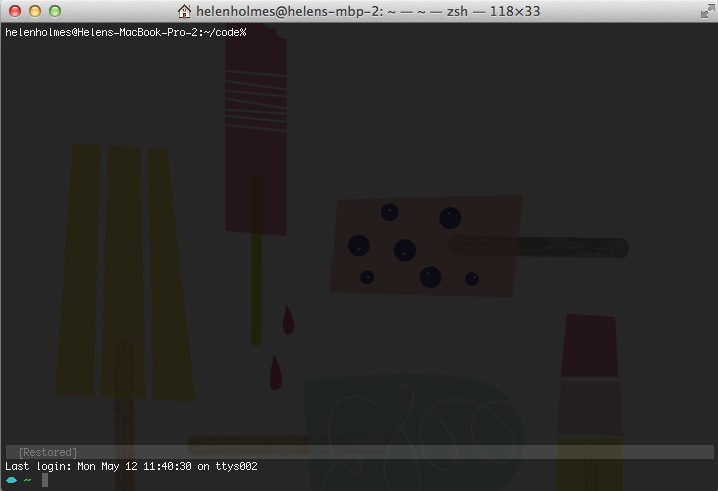
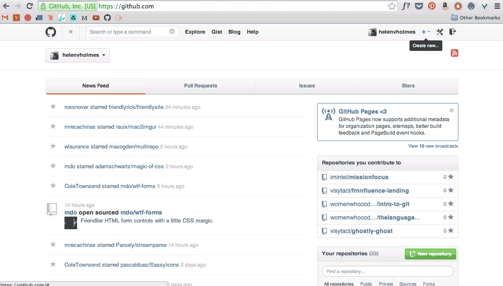
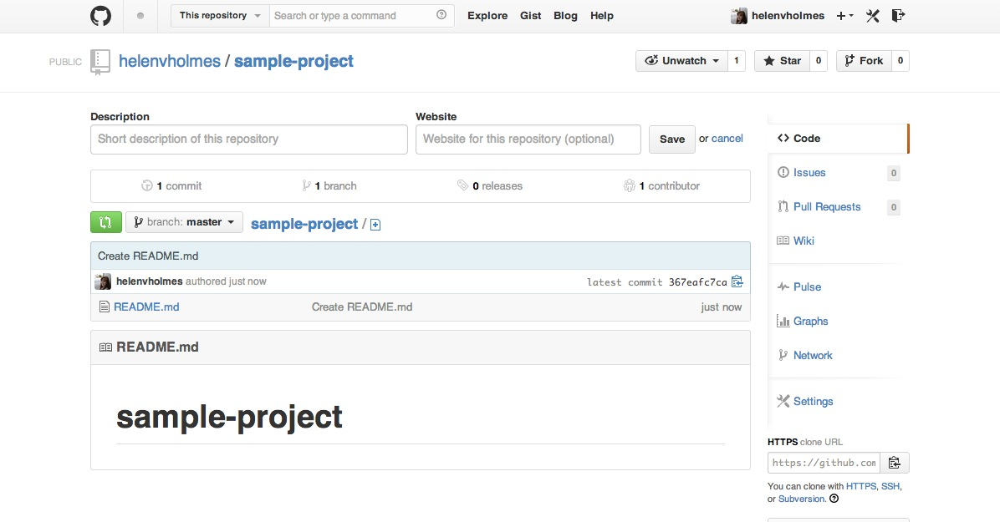
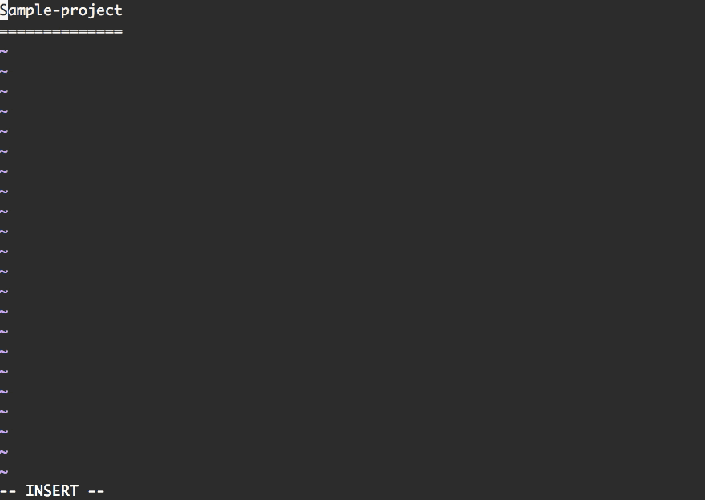
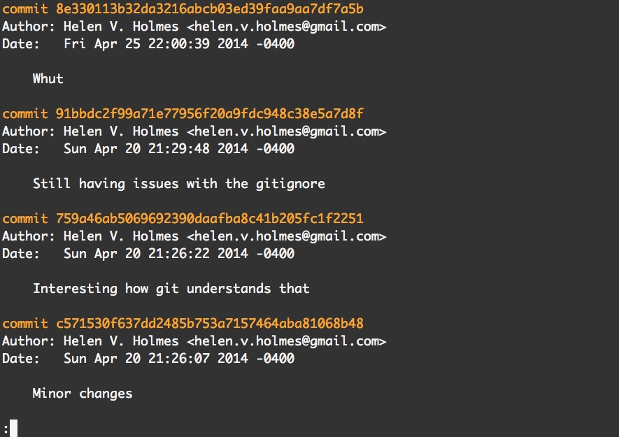

Intro to Git and Github
http://womenwhocode.github.io/intro-to-git
What on earth is git?
- Version control
- Backing up code
- Code sharing
So what is "version control"?

"Version Control"
- History of your changes
- Give a little message about changes on save
- Go back in history
- Multiple versions of code with
branches
Backing up code
- 'Remote repositories'
push-ing,pull-ing- Dropbox for code
Sharing Code
- Code is better with friends!
- Work remotely with a team

Recap on why you should use git
- Save yourself from losing code
- Back up your code because it's smart
- Work with other devs because code is more fun with friends
So what is Github, then?
- Website where you can backup your code (like Dropbox)
- See other people's code (open-source)
- Work with other devs to make stuff (
pull requests)
So, let's try it.
Open your terminal: mkdir code cd code mkdir sample-project cd sample-project
touch README.md git init git add README.md git commit -m "Our first file"
github.com
And when you refresh github...
Let's make some changes.
vim README.md

hit the letter "s"
Now we can type in the document.
how do i get out of vim?
When you're done typing, hit Control + c and then type :wq.
let's make another file and then push everything to github.
touch index.html git add --all Shorthand for 'add everything' git commit -m "Commit message" git push
git log

Resources
Try Git in your Browser
Create a Repo
Github Bootcamp
Github Help
Intro to the Command Line